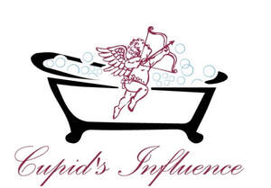

Trade Mark Journal No.2025/031 1 August 2025
UK00004235858 18 July 2025 (3,4,5,21)

- Class 3
- Bath bombs; Bath salts; Bath soap; Bubble bath; Bath beads; Bath powder; Bath soaps; Bath gels; Bath lotion; Bath and shower gels; Bath crystals; Cosmetic bath salts; Bath oil; Shower and bath foam; Bath and shower foam; Bath oils; Bath flakes; Bath creams; Bath foam; Foam bath; Foams for the bath; Bath foams; Liquid bath soaps; Bath gel; Shower and bath gel; Bath and shower gel; Bath cream; Liquid bath soap; Liquid soap used in foot bath; Bath milk; Bath pearls; Non-medicated bath salts; Bath herbs; Bubble baths; Bubble bath [for cosmetic use]; Bath preparations; Preparations for the bath; Bath and shower oils [non-medicated]; Bath powder [cosmetics]; Foaming bath gels; Foaming bath liquids; Liquid soap used in foot baths; Bubble bath preparations [for cosmetic use]; Bath crystals (Non-medicated -); Bath lotions (Non-medicated -); Bath powders (Non-medicated -); Bath soak for cosmetic use; Non-medicated bath oils; Bath oils (Non-medicated -); Aromatic oils for the bath; Bath foams (Non-medicated -); Bath gels (Non-medicated -); Bath pearls (Non-medicated -); Soap; Shower soap; Shaving soap; Soaps; Perfumed soap; Soap powder; Liquid soap; Handmade soap; Soap powders; Bars of soap; Creams (Soap -) for use in washing; Bar soap; Cosmetic soap; Skin soap; Sugar soap; Soap products; Loofah soaps; Cakes of soap; Soap (Cakes of -); Soap sheets; Hand soap; Body soap; Shaving soaps; Scented soaps; Liquid soaps; Cakes of soap for body washing; Cream soaps; Perfumed soaps; Body cream soap; Soaps and gels; Cosmetic soaps; Sponges impregnated with soaps; Non-medicated soaps; Facial soaps; Hand soaps; Soaps in gel form; Liquid soaps for hands and face; Soapy gels; Refill packs for hand soap dispensers; Shampoo; Soaps for body care; Shampoo bars; Shaving lotion; Body scrub; Exfoliating body scrub; Body scrubs; Exfoliating scrubs for the body; Body wash; Body lotion; Cosmetic body scrubs; Body scrubs [cosmetic]; Body washes; Body moisturisers; Hair and body wash; Body lotions; Body polish; Moisture body lotion; Body and facial butters; Body cleansing foams; Body and facial oils; Body oils; Face and body lotions; Body butters; Body spray; Face scrub; Body shampoos; Body massage oils; Toning lotion, for the face, body and hands; Moisturizing body lotions; Body sprays; Body deodorants; Cosmetic body mud; Scented body lotions; Body mist; Lotions for face and body care; Body oil; Scented body spray; Body butter; Body creams; Moisturising body lotion [cosmetic]; Body powder; Body masks; Deodorants for body care; Body cream; Non-medicated body soaks; Scented body creams; Body oils [for cosmetic use]; Gel scrub; Body oil spray; Body fragrances; Face and body creams; Exfoliating scrubs for the hands; Body gels; Body oil [for cosmetic use]; Exfoliating scrubs for the face; Exfoliating scrubs for the feet; Hand and body butter; Body soufflé; Body sprays [non-medicated]; Body milk; Body and facial gels [cosmetics]; Skin cleansing lotion; Face and body masks; Body emulsions; Body and facial creams [cosmetics]; Scented body lotions and creams; Facial scrubs; Perfumed body lotions [toilet preparations]; Body milks; Body care cosmetics; Body firming creams; Beauty creams for body care; Creams (Non-medicated -) for the body; Body cream for cosmetic use; Body creams [cosmetics]; Body gels [cosmetics]; Body glitters; Exfoliants for the cleansing of the skin; Pumice stones for use on the body; Body deodorants [perfumery]; Skin lotion; Body emulsions for cosmetic use; Body glitter; Body powder (Non-medicated -); Body splash; Body mask powder; Sparkling fluid for the body; Face and body glitter; Body mask lotion; Body mask cream; Facial lotion; Skin lotions; Lotions for the skin; Baby lotion; Baby body milks; Moisturising skin lotions [cosmetic]; Facial lotions; Non-medicated skin lotions; Beauty tonics for application to the body; Skin moisturizer; Milky lotions for skin care; Hand lotion (Non-medicated -); Massage oils and lotions; After-sun lotions; Cleansing lotions; Skin moisturizers; Shaving lotions; Day lotion; Non-medicated stimulating lotions for the skin; Bathing lotions; Skin moisturiser; Skin moisturisers; Skin cream; Facial cream; Skin cleansing cream; Hair cream; Skin cream [for cosmetic use]; Shaving cream; Cuticle cream; Anti-aging cream; Lip cream; Cleansing cream; Skin cleansing cream [non-medicated]; Facial cream [for cosmetic use]; Shower cream; Sunscreen cream; Cream for whitening the skin; Whitening the skin (Cream for -); Hand cream; Horse oil cream for skin care; Face cream (Non-medicated -); Anti-wrinkle cream; Eye cream; Aftershave moisturising cream; Moisturiser; Anti-ageing moisturiser; Moisturisers; Oils for moisturising the skin after sunbathing; Skin moisturizer masks; Moisturising skin creams [cosmetic]; Skin moisturizers used as cosmetics; Facial moisturisers [cosmetic]; Hair lotion; Skin toner; Cosmetic moisturisers; Creams for firming the skin; Skin cleansers; Facial moisturizers; Moisturisers [cosmetics]; Oils for the skin; Skin emollients; Massage oil; Facial oil; Hair oil; Cuticle oil; Cleansing oil; Baby oil; Shaving oil; Beard oil; Hair oils; Oil baths for hair care; Oils for hair conditioning; Hair shampoo; Combing oil; Hair lotions; Hair moisturizers; Hair shampoos; Shampoos for human hair; Hair masks; Lavender oil for cosmetic use; Shaving oils; Jasmine oil; Rosemary oil for cosmetic use; Shaving creams; Shaving sets, comprised of shaving cream and aftershave; Shave creams; Shaving mousse; Shaving balm; Shaving gel; Shaving balms; Shaving foam; Foam for use in shaving; Pre-shave creams; Shaving gels; Foams for use in shaving; Shaving foams; Nail cream; Anti-wrinkle cream [for cosmetic use]; After-shave creams; Shave balm; Shave gel; Shower creams; Facial creams; Day cream; Aftershave creams; Shaving preparations; Cleansing foam; Cleaning foam; Foams for use in the shower; Shower foams; Skin cleansing foams; Shower gel; Scented wax melts; Wax melts [fragrancing preparations]; Face masks; Cleaning masks for the face; Facial masks; Face wash; Face creams; Skin masks; Face wash [cosmetic]; Face oils; Face scrubs (Non-medicated -); Facial beauty masks; Beauty masks for hands; Face powder (Non-medicated -); Cosmetic facial masks; Facial masks [cosmetic]; Clay skin masks; Hand masks for skin care; Gel eye masks; Skin masks [cosmetics]; Face creams for cosmetic use; Beauty masks; Masks (Beauty -); Pores tightening mask packs used as cosmetics; Cleansing masks; Hydrating masks; Cosmetic mud masks; Cosmetic masks; Foot scrubs; Almond soap; Scented bathing salts; Fruit and vegetable wash; Pumice stone; Exfoliants; Facial scrubs [cosmetic]; Exfoliants for the care of the skin; Hand scrubs; Cleansing balm; Deodorant soap; Soap (Deodorant -); Facial cleansers; Skin cleansers [non-medicated]; Soap pads; Aloe soap; Cuticle oils; Exfoliating creams; Exfoliant creams; Eucalyptus oil for cosmetic use; Scented oils; Aloe soaps; Facial massage oils; Exfoliating scrubs for cosmetic purposes; Facial oils; Perfumed oils for skin care; Shower oils; Moisturizers; Almond soaps; Massage oils; Moisturizing creams; Non-medicated shower oils; Skin care oils [non-medicated]; Skin emollients [non-medicated]; Moisturizing milk; Mineral oils [cosmetic]; Skin care oils [cosmetic]; Non-medicated skin balms; Massage oils, not medicated; Beard balm; Softening cleanser [cosmetic]; Moisturising creams; Facial butters; Skin balms [cosmetic]; Baby bubble bath; Bubble bath preparations; Non-medicated bubble bath preparations; Preparations for the bath and shower; Bath and shower preparations; Shower and bath preparations; Preparations for use in the bath or shower; Baby bath mousse; Cosmetic preparations for bath and shower; Bath creams (Non-medicated -); Massage candles for cosmetic purposes; Massage waxes; Aromatherapy lotions; Aromatherapy creams; Cosmetic massage creams; Massage creams, not medicated; Potpourri sachets for incorporating in aromatherapy pillows; Non-medicated massage preparations; Scented room sprays; Scented water for fragrancing; Aromatherapy preparations; Incense sachets; Perfume oils; Scented sachets; Potpourris [fragrances]; Incense spray; Fragrance sachets; Natural oils for perfumes; Scented oils used to produce aromas when heated; Non-medicated oils; Essential oils; Hand oils (Non-medicated -); Oils for perfumes and scents; Peppermint oil [perfumery]; Essential oils as perfume for laundry purposes; Cosmetic sun oils; Tissues impregnated with essential oils, for cosmetic use; Shower gels; Bath and shower gels, not for medical purposes; Cleansing gels; Cosmetic products for the shower; Moisturising creams, lotions and gels; Facial wash; Facial washes; Hand washes; Beauty soap; Soaps in liquid form; Lip balm; Lip balms; Lip balm [non-medicated]; Lip balms [non-medicated]; Non-medicated lip balms; Lip gloss; Lip glosses; Lip cosmetics; Lip conditioners; Blemish balm creams; Aftershave balm; Beauty balm creams; Baby bottom balm; After-shave balms; Skin balms (Non-medicated -); Aftershave balms; Lip care preparations; Balms (Non-medicated -); Foot balms (Non-medicated -); Cosmetic nourishing creams; Skin relief serum [cosmetic]; Moisturising gels [cosmetic]; Skin recovery creams [cosmetics]; Hydrating creams for cosmetic use; Cleansing creams [cosmetic]; Cosmetic creams for dry skin; Moisturizing preparations for the skin; Skin care creams [cosmetic]; Cosmetic creams for skin care; Eye wrinkle lotions; Cosmetic creams for the skin; Skin creams [cosmetic]; Skin creams [for cosmetic use]; Skin care lotions [cosmetic]; Skin creams [non-medicated]; Non-medicated skin creams; Non-medicated skin serums; Lip polisher; Lip protectors (Non-medicated -); Facial washes [cosmetic]; Skin cleansers [cosmetic]; Bath salts, not for medical purposes; Foam bath preparations; Hair fixing oil; Lotions for beards.
- Class 4
- Candles; Tealight candles; Votive candles; Scented candles; Fragranced candles; Candles in tins; Perfumed candles; Candles (Perfumed -); Soy candles; Table candles; Tea light candles; Church candles; Fruit candles; Floating candles; Aromatherapy fragrance candles; Beeswax for use in the manufacture of candles; Tealights; Special occasion candles; Tea lights; Candles containing insect repellent; Oils for fragrancing; Oils for use as additives to heating oils.
- Class 5
- Salts for mineral water baths; Mineral salts for baths; Anti-bacterial soap; Antibacterial soap; Clay for use in mud baths [health spas]; Disinfectant soap; Antiseptic cleansers; Medicated massage candles; Massage candles for therapeutic purposes; Ear candles; Ear candles for therapeutic purposes; Mosquito-repellent incense; Mosquito-repellent incenses; Medicinal oils; Oils (Medicinal -); Medicated baby oils; Skin care oils [medicated]; Mud for baths; Baths (Salts for mineral water -); Medicated soap; Bath salts for medical purposes; Epsom salts; Analgesic balm.
- Class 21
- Bath sponges; Body sponges; Body scrubbing puffs; Nylon mesh body cleansing puff; Scrub sponges; Exfoliating brushes; Abrasive mitts for scrubbing the skin; Facial cleansing sponges; Exfoliating mitts; Scrubbing brushes; Skin cleansing brushes; Bath brushes; Oil burners (aromatherapy); Essential oil burners; Aromatic oil diffusers, other than reed diffusers; Aromatic oil diffusers, other than reed diffusers, electric and non-electric; Fragrant oil burners.
CUPID'S INFLUENCE BATH PRODUCTS LTD